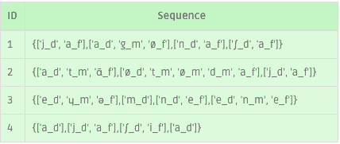

Émergence phonétique
Explorer les séquences de phonèmes fréquents à l’aide de motifs séquentiels
La fouille de données est une technique d'extraction de motifs, c’est-à-dire de récurrences intéressantes, utiles et parfois inattendues dans les bases de données afin de mieux les comprendre et qui peuvent être utilisées pour prendre des décisions.
Et dans notre cas ?
Nous avons extrait un type particulier de sous-séquences appelés motifs séquentiels et définis par (Srikant et Agrawal 1996). Cette étude ne tient pas compte de l'enfant ni
de son âge, mais simplement de l'ordre fréquent d'apparitions des phonèmes et de leurs positions dans les mots au cours des années. Par exemple, les données nous indiquent que le phonème « b » en début de mot apparaît
avant le phonème « i » en fin de mot, lui-même avant le phonème « a » en début de mot etc.
Nous avons considéré comme séquences la suite des enregistrements par enfants. Les items sont les phonèmes par exemple A, B, C, D, E et F. Les itemsets sont l’ensemble des phonèmes prononcés pendant un enregistrement
et noté entre parenthèses. Dans un itemset, les phonèmes sont considérés comme non ordonnés. Un exemple de séquence « (A B C)(A B D E)(F A) » signifie que l’enfant a prononcé les phonèmes A, B et C lors du premier
entretien, puis les phonèmes A, B, D et E lors du 2ème entretien, puis les phonèmes F et A lors du troisième. Une sous séquence est séquence incluse dans une séquence de l’enfant.
L’objectif ici est d’extraire
toutes les sous séquences fréquentes dont le support (le nombre d’occurrence) est supérieur à un seuil fixé par l’utilisateur. Par exemple, la sous séquence « (A B)(A E)(F A) » pourrait être une sous séquence fréquence.
Actuellement, la base contient 6 séquences pour 6 enfants. Pour pourvoir avoir un support plus conséquent, chaque séquence a été divisée arbitrairement en 160, ce qui nous a permis de travailler avec 960 séquences. Nous avons ainsi pu extraire des sous-séquences
de phonèmes fréquentes en fonction de leur fréquence d'occurrence que nous avons fixée manuellement à 890 occurrences, c'est-à-dire que la sous-séquence de phonème doit être présente dans 93% des séquences.
support
SRIKANT R., AGRAWAL R., « Mining Sequential Patterns: Generalizations and Per-formance Improvements », Proceedings of the 5th International Conference on ExtendingDatabase Technology (EDBT’96), Avignon, France, September 1996, p. 3-17
Guide d'utilisation et de lecture de la visualisation Sankey:
L'interprétation du Sankey s'effectue de gauche à droite en suivant les liens entre les colonnes, et permet de définir l'ordre d'apparition des phonèmes au fil du temps.
Une barre dans une colonne est d’autant
plus grande qu’elle correspond à un nombre de répétitions élevé. Dans chaque colonne le phonème correspond à la partie située avant le " _ ", la deuxième partie correspond à l'emplacement de ce phonème au sein du
mot dans lequel il a été prononcé :
En ce qui concerne le filtre, celui-ci n'influence pas le contenu de l'étude mais son visuel. C'est une aide à la lecture qui permet de choisir la manière dont sont colorées les liens du diagramme de Sankey.

Cette étude a été réalisée avec l'aide de M. Alatrista-Salas et de la librairie pymining écrite par M. Infobart
Contacts: h.alatristas[at]up.edu.pe, barthelemy[at]infobart.com